全部为 n=16、m=8，D/X/Y/Z 真实互斥，A=D+X、B=D+Y、C=D+Z。类别来自留楼外历史；本页是在完整实验后按机制选出的案例，不代表总体比例。失败 Q 留空，不计零分。
完整中文机制报告案例数值总表精确设计与成员完整票账来源与核验
| 图片 | 方法/当前折方向 | Q A/B/C | B−A | C−A | C−B | 对称跨幅度−同类 |
|---|---|---|---|---|---|---|
| 7y3sRwLe3Va-04 | TARGET_DSTRUCT_K3 C2→C1 | 95.5160 / 95.6950 / 95.4887 | 0.1790 | -0.0273 | -0.2063 | -0.0622 |
| B6ByNegPMKs-48 | V21_DSTRUCT_RAW3_K3 C1→C2 | 51.3339 / 63.0342 / 54.6487 | 11.7003 | 3.3149 | -8.3855 | -5.8502 |
| uNb9QFRL6hY-40 | V21_DSTRUCT_RAW3_K3 C2→C1 | 48.4411 / 97.3068 / 48.4319 | 48.8657 | -0.0092 | -48.8749 | -24.4236 |
| x8F5xyUWy9e-08 | V21_DSTRUCT_RAW3_K3 C2→C1 | 97.6518 / 99.0946 / 不可评 | 1.4428 | 不可评 | 不可评 | 不可评 |
| jtcxE69GiFV-13 | TARGET_DSTRUCT_K3 C2→C3 | 74.4297 / 75.2693 / 92.8731 | 0.8396 | 18.4434 | 17.6038 | 17.1840 |
| S9hNv5qa7GM-09 | TARGET_DSTRUCT_K3 C2→C3 | 80.6945 / 79.1831 / 不可评 | -1.5113 | 不可评 | 不可评 | 不可评 |
同类 |B−A|；对称跨类 (|C−A|+|C−B|)/2。类别号仅对相应方法和留楼外折有定义。
四角各16票，结构相同；AC 角距和底面差异均大于 AB。无需额外范围裁定。
事件 2978172ce6fe180ffe50e2dc · TARGET_DSTRUCT_K3
原始全景图原答及人员分块票账共同 D 对应关系完整重放状态PDF
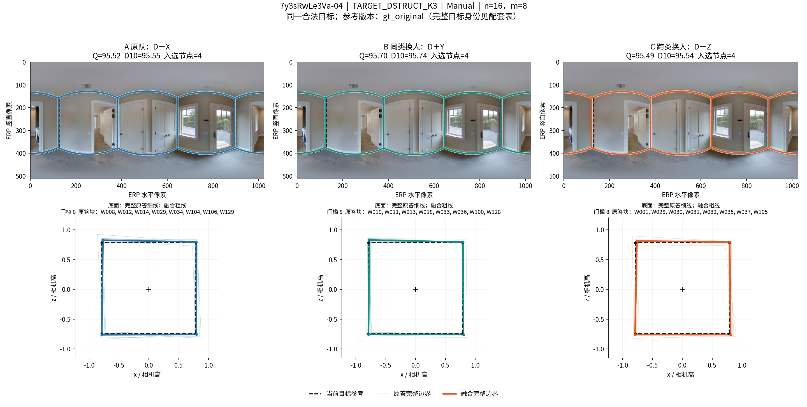
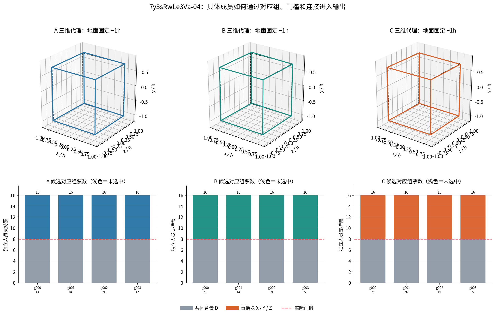
Q 与 IoU3D 的变化方向不同。人工可核对两端停止边和主顶面/梁底边界；当前参考保持。
事件 8ffd905ec3a4770f8606cd93 · V21_DSTRUCT_RAW3_K3
原始全景图原答及人员分块票账共同 D 对应关系完整重放状态PDF
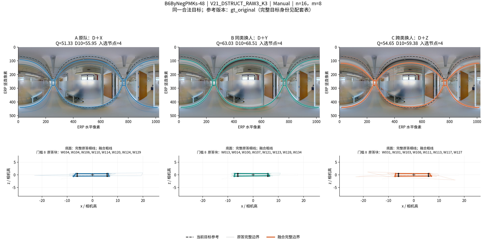
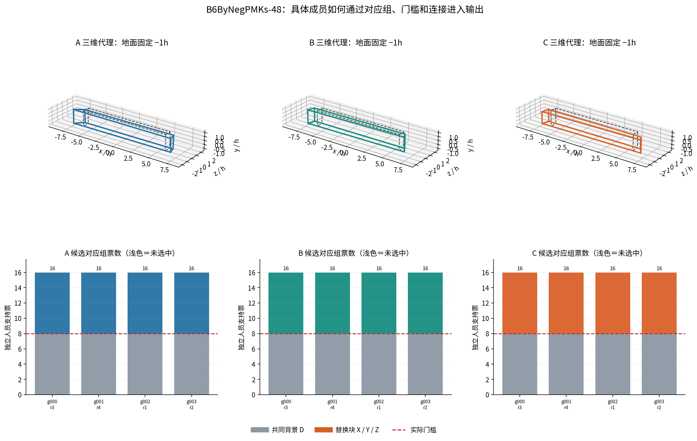
远角 A7、B10、C6票；同类 B 从五角变六角。看缝边 x≈0、4 的远近两条边及遮挡地面落点。
事件 7881ea8d8b010028bc505a47 · V21_DSTRUCT_RAW3_K3
原始全景图原答及人员分块票账共同 D 对应关系完整重放状态PDF
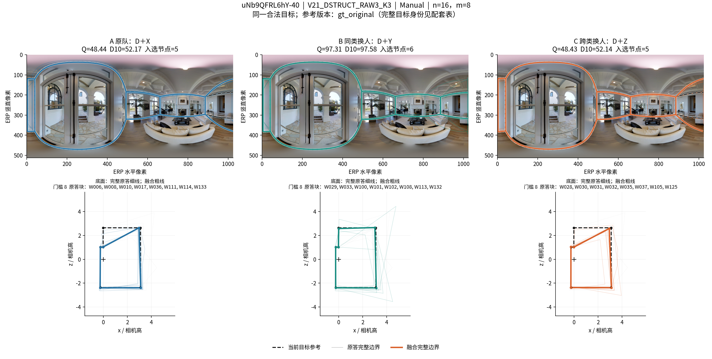
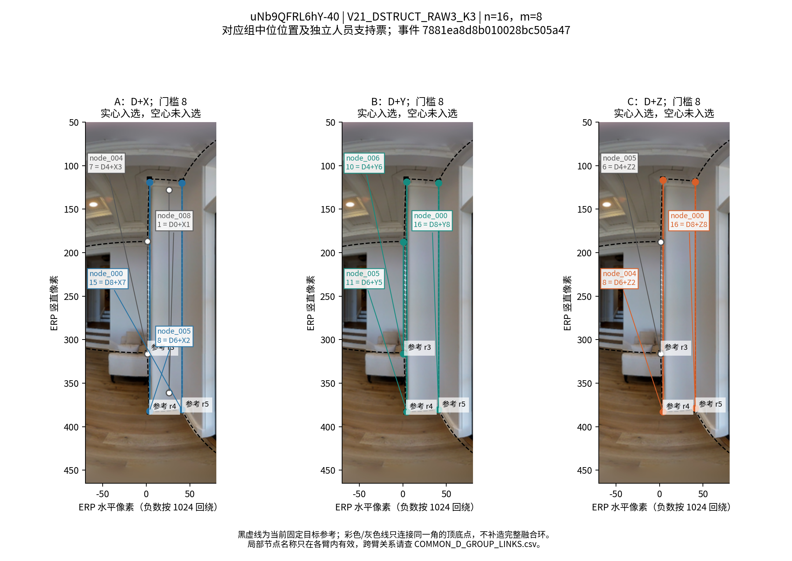
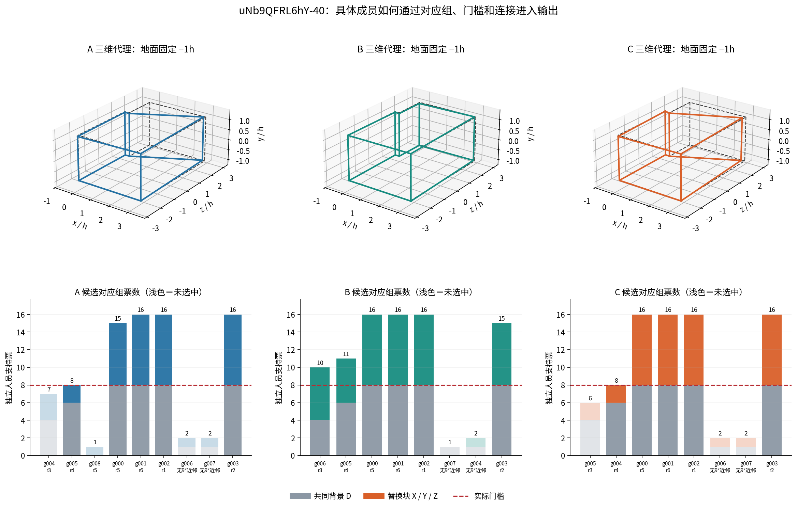
局部 x≈144、155 两组各8票，没有来源环覆盖全部五个入选组。人工区分同角定位误差与不同边界表达。
事件 ce5e6ff5c300c3022395c8d6 · V21_DSTRUCT_RAW3_K3
原始全景图原答及人员分块票账共同 D 对应关系完整重放状态PDF
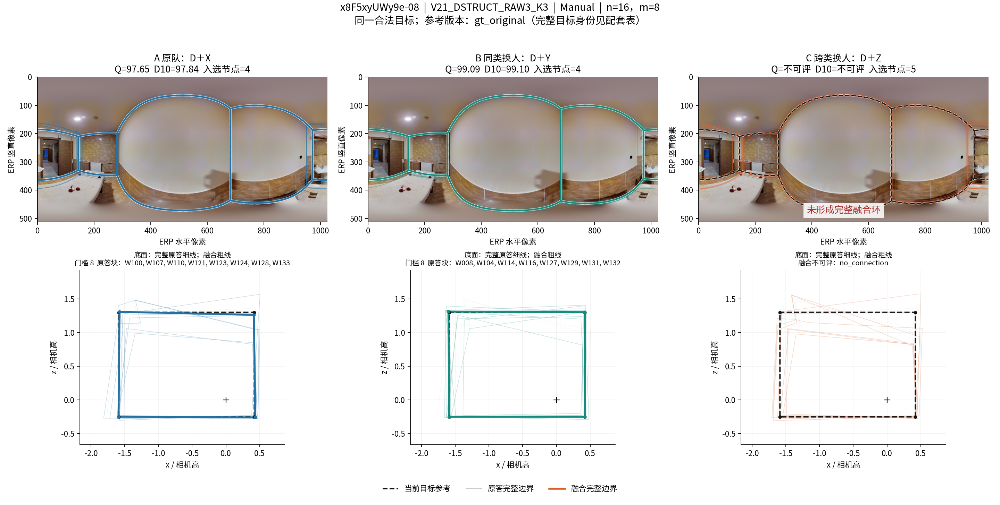
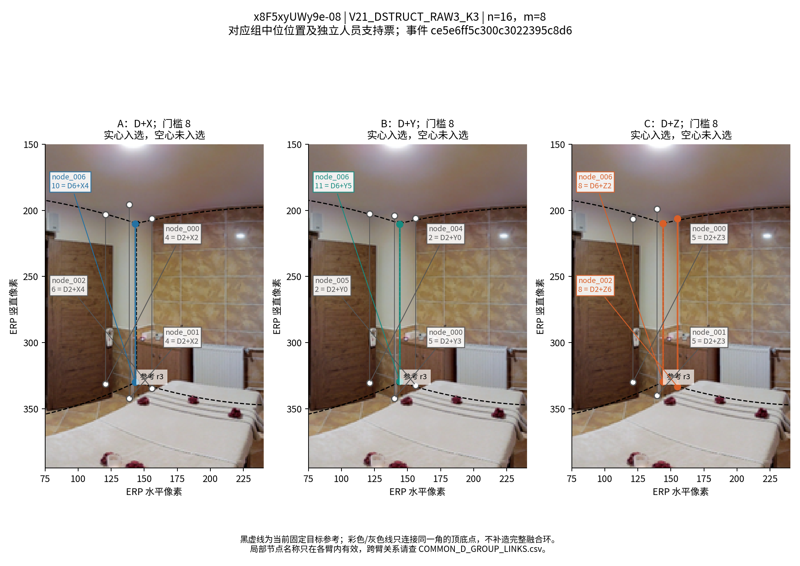
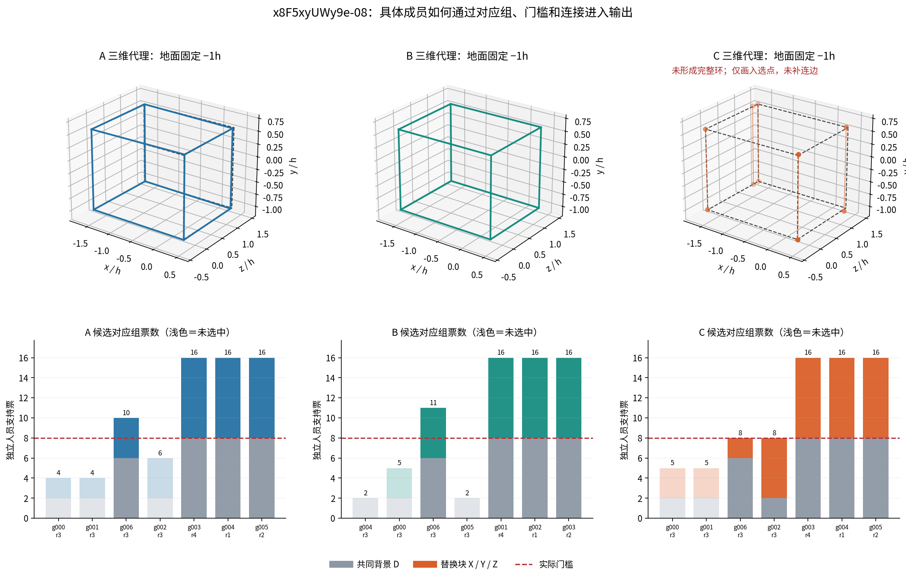
两个短折达到8/9票；Q 提升18.44分，来源匹配记录劳动量增加12.58%。共同D的W106观测发生重分组。
事件 0836672f35ad7742021ab716 · TARGET_DSTRUCT_K3
原始全景图原答及人员分块票账共同 D 对应关系完整重放状态PDF
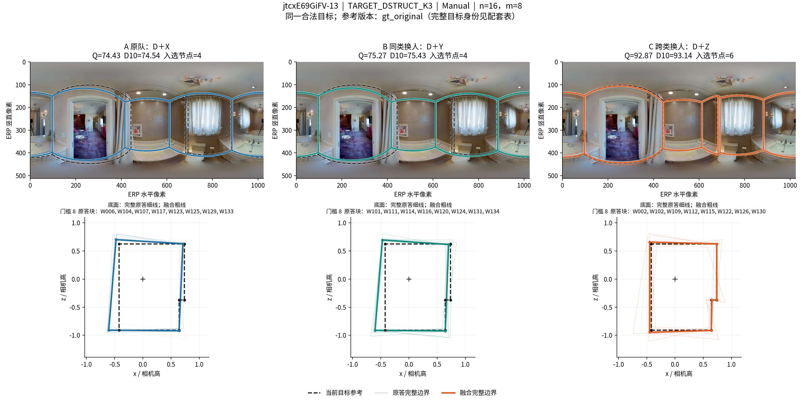
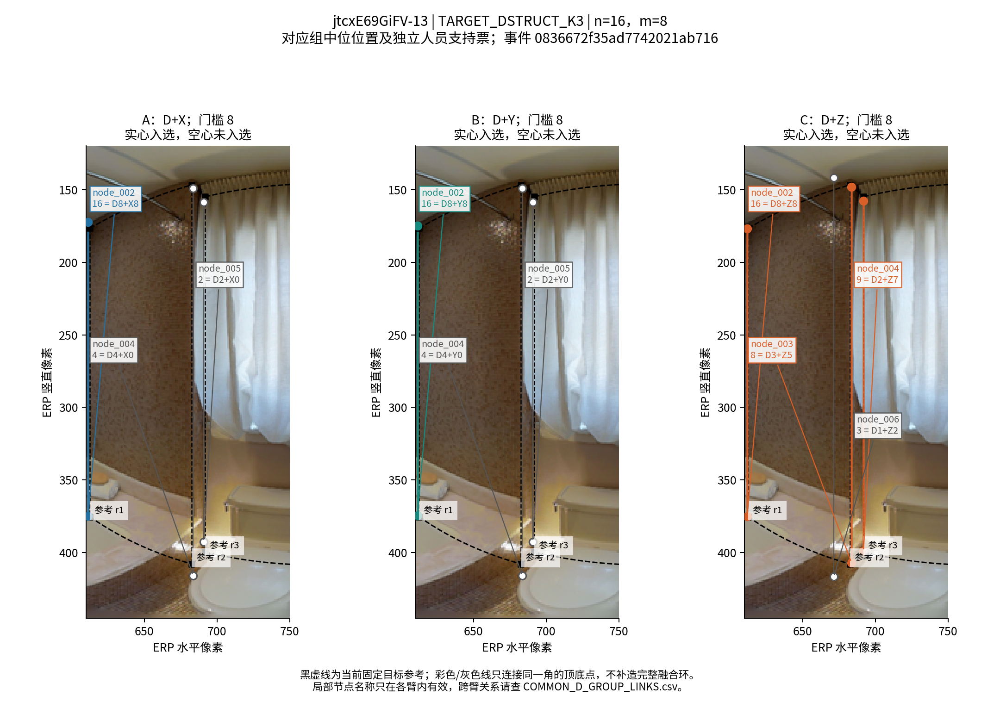
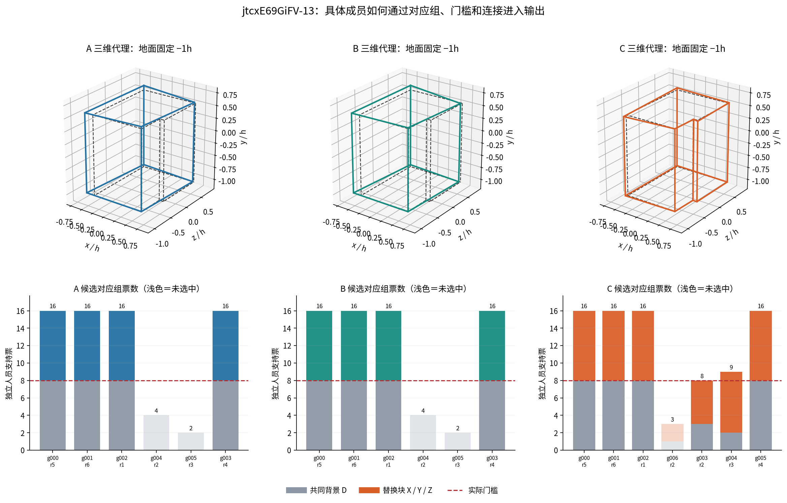
当前四角目标已由用户裁定。两个旧分支角各8票、另一角7票，当前停止边也8票，最终连接失败。无需重复裁定范围。
事件 bd186f9502bc8688246f76d7 · TARGET_DSTRUCT_K3
原始全景图原答及人员分块票账共同 D 对应关系完整重放状态PDF
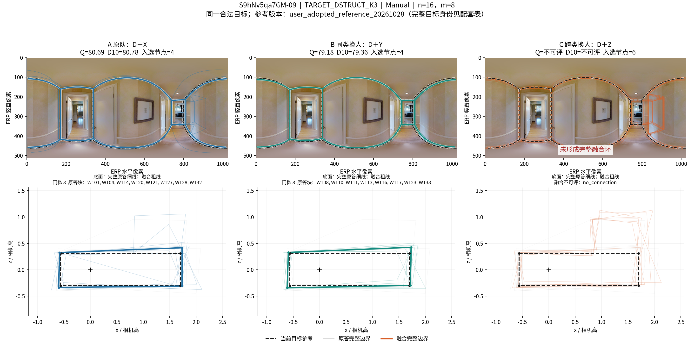
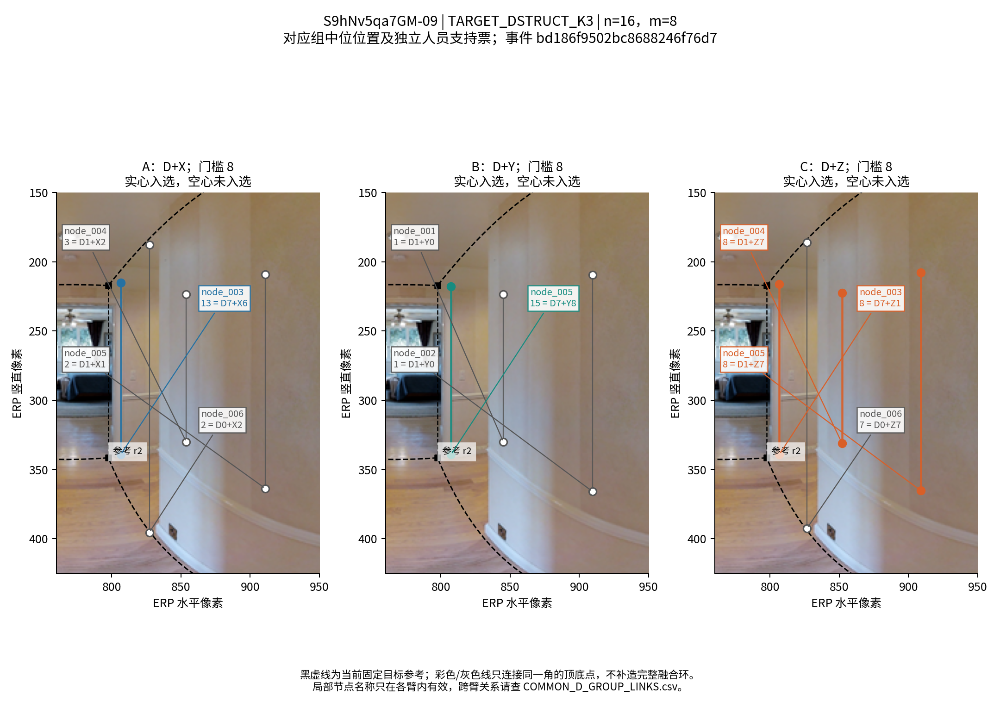
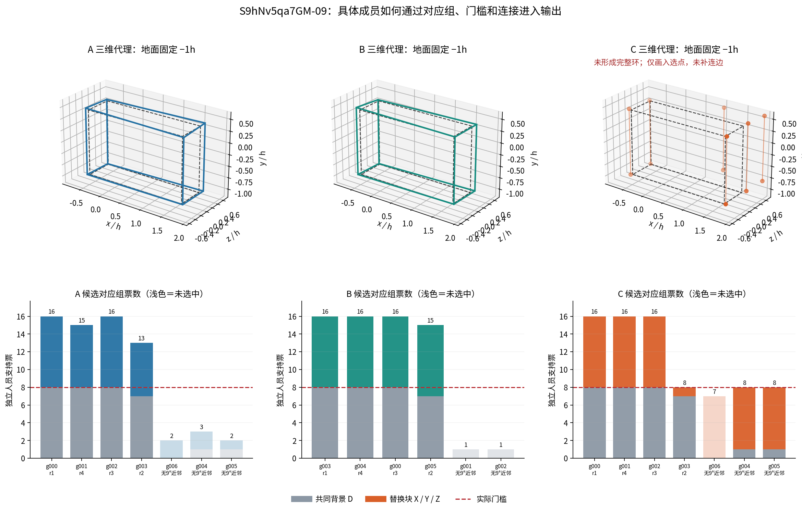
图像均由冻结原答和实际融合状态绘制。三维按相机高归一；失败仅画入选点，不补造完整环。六例18臂的标量复现误差≤1.42×10⁻¹⁴。